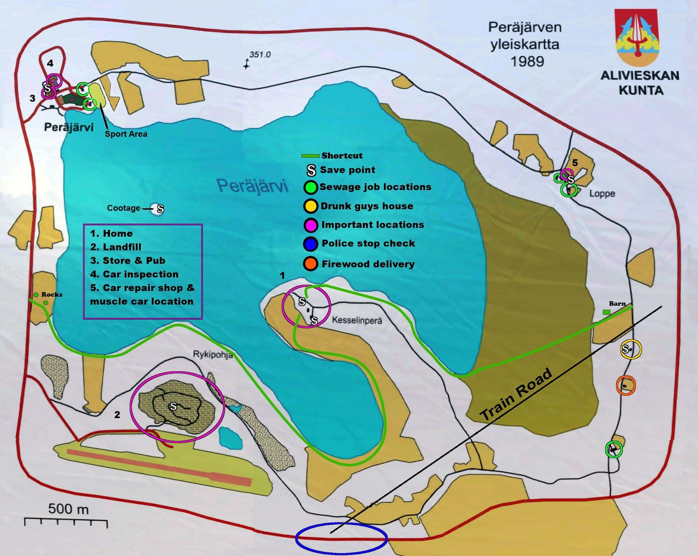
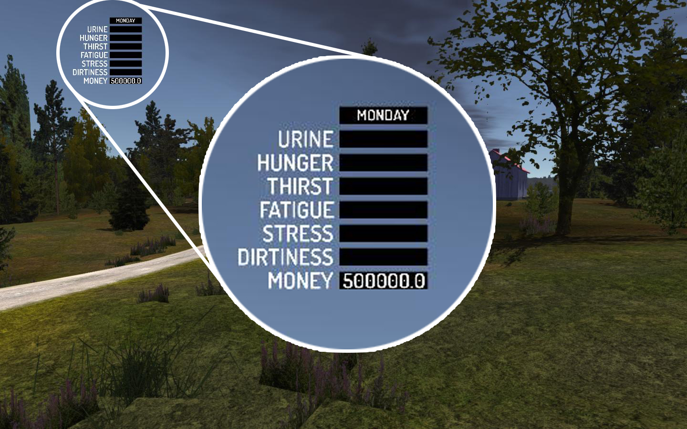
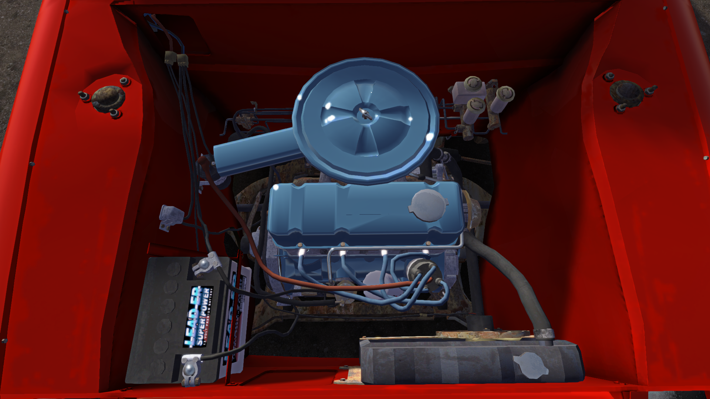
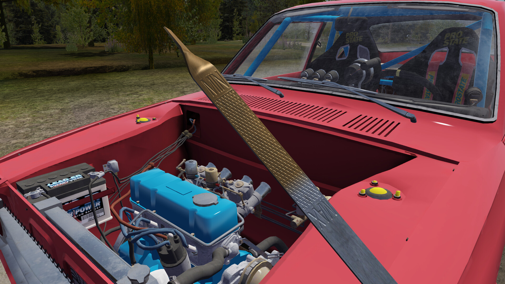
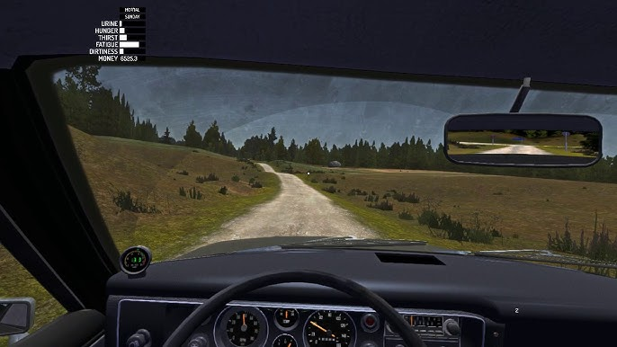
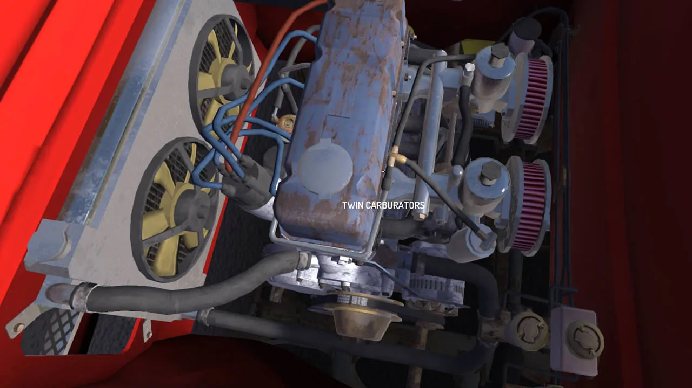
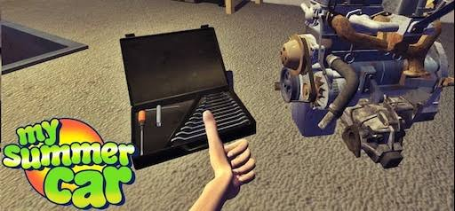
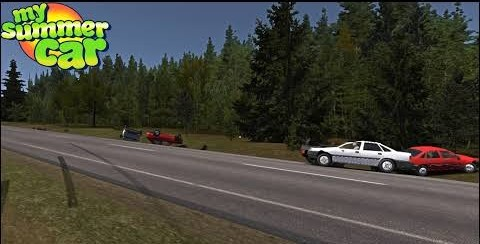

My Summer Car: Guia Completo para Iniciantes
Se você está começando em My Summer Car, este é o guia ideal para te ajudar a entender cada detalhe importante deste simulador finlandês de sobrevivência, mecânica e caos automotivo. Com uma curva de aprendizado íngreme e muitos elementos interligados, este jogo testa sua paciência, dedicação e habilidades de observação. Desde o momento em que você acorda na casa de seus pais até completar a montagem do famoso Satsuma, cada passo exige atenção. Este guia foi feito pensando em você que quer aproveitar ao máximo a experiência.
1. Primeiros Passos
Ao iniciar o jogo, você acorda em uma casa simples, no meio da zona rural da Finlândia. O silêncio ao redor, o rádio finlandês tocando músicas aleatórias e a bagunça da sua garagem logo mostram que o jogo será tão cômico quanto desafiador. A primeira coisa a se fazer é explorar a casa e entender o funcionamento do HUD, que mostra indicadores como sede, fome, urina, stress, sujidade, fadiga e saúde. Esses elementos são fundamentais para sua sobrevivência. Lembre-se: morrer significa perder todo o progresso caso você não tenha salvo. Então, familiarize-se com o ambiente e aprenda a cuidar de você mesmo antes de sair para aventuras maiores.
2. Montagem do Carro
A montagem do Satsuma é o coração do jogo. Todas as peças estão disponíveis na garagem, mas não há instruções no jogo — você precisa saber o que fazer, na ordem certa. São dezenas de parafusos, peças, ajustes e testes. Montar o carro não é apenas colocar as peças — é entender como um motor de combustão funciona. Você vai precisar instalar o bloco do motor, o virabrequim, pistões, cabeçote, carburador, sistema de escape, suspensão, direção, e por aí vai. Prepare-se para errar, desmontar e tentar de novo. Ter um guia de montagem ou vídeos abertos pode ser um grande auxílio. E lembre-se: torque errado, peças mal colocadas ou esquecidas resultarão em problemas sérios na hora de dar a partida no carro.
3. Manutenção e Sobrevivência
O personagem precisa comer, dormir, urinar, tomar banho e relaxar. Alimentos estão na geladeira, mas tudo acaba — é preciso ir até a cidade para reabastecer. Para tomar banho, entre no chuveiro. Para reduzir o stress, você pode beber, fumar, tomar café ou usar a sauna. Se negligenciar qualquer uma dessas necessidades, a consequência pode ser a morte. Por isso, mantenha uma rotina equilibrada, e sempre pense duas vezes antes de dirigir com sono ou embriagado. O jogo não perdoa erros, e um pequeno descuido pode acabar em acidente fatal — literalmente.
4. Trabalhos e Grana
Dinheiro é essencial no jogo, principalmente para comprar peças de carro, mantimentos e gasolina. Há diversas formas de ganhar dinheiro honestamente: entregas de lenha, limpar fossas sépticas com o caminhão-tanque, entre outros. Cada trabalho tem sua dificuldade e risco, mas também recompensa bem. Trabalhar é uma maneira de explorar mais do mapa, conhecer NPCs e, claro, juntar grana para turbinar seu Satsuma com upgrades como carburador de corrida, radiador novo, suspensão esportiva, etc. E atenção: bater o carro pode gerar custos altos de reparo.

5. Dicas Rápidas
- Salve o jogo: Use o banheiro para salvar. Salvar após conquistas importantes evita frustrações.
- Evite morrer: Não coma comidas estragadas, não durma no meio da estrada, e não dirija bêbado.
- Fique atento ao inventário: Carregue chaves de boca, óleo, gasolina e peças de reposição quando for longe.
- Estude a mecânica: Saber como funciona um motor é quase obrigatório para jogar bem. Pesquise fora do jogo se necessário.
6. Dirigindo por Aí
Dirigir é uma parte fundamental da experiência. A direção é realista, sem assistência de volante ou GPS. Para os iniciantes, pode ser difícil manter o controle, mas com prática, você vai se acostumar. O carro tem uma velocidade razoável, mas é importante sempre checar o nível de combustível. Também é essencial saber quando parar para descansar e não exagerar nas longas viagens sem abastecer.
7. Personalizando o Satsuma
O Satsuma pode ser customizado de diversas maneiras, como aparência externa, suspensão, motor e mais. A personalização vai desde a troca de peças para melhorar o desempenho, até a pintura do carro. A estética é importante não só para seu gosto pessoal, mas também para o jogo em si — muitas vezes, é necessário andar com o carro bem ajustado para concluir missões com sucesso.
8. Aumentando sua Habilidade de Mecânica
Para realizar uma boa montagem do carro, você precisa aumentar sua habilidade mecânica. Pratique mais, aprenda com os erros e acertos, e busque eficiência no trabalho. Quanto mais você aprende, mais peças pode substituir e mais facilmente consegue reparar o carro sem causar danos.
9. Sobrevivendo ao Caos
My Summer Car não é para qualquer um. É um jogo de paciência, aprendizado e adaptação. Pode ser frustrante, mas as recompensas de ver seu Satsuma rodando perfeitamente ou concluir um trabalho com sucesso fazem tudo valer a pena. Aproveite a jornada, e sempre tenha em mente que, no final, o caos é parte da diversão.
Conclusão
My Summer Car é mais que um simulador de carro — é um retrato da vida real, com todas as suas frustrações, conquistas e absurdos. Para quem gosta de jogos desafiadores, cheios de possibilidades e com liberdade total, este título é uma verdadeira joia. Dominar o jogo exige tempo e persistência, mas a recompensa é imensa. Quando ouvir o motor do Satsuma funcionando pela primeira vez após semanas de tentativa, entenderá o valor de cada esforço. Boa sorte e que a força do motor esteja com você!